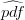
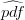

Quantitative geomorphology of the White Mountains (California), using detrital Apatite Fission Track thermochronology
[note]
Abstract
Detrital thermochronology has been proposed as a method for measuring average basin-wide erosion rates. This paper illustrates how to use detrital apatite fission track (AFT) thermochronology to map out where in a basin erosion takes place. Five samples of detrital AFT ages were collected on an alluvial fan that is fed by the Marble Creek drainage basin in the northern White Mountains (California). Using a digital elevation model to characterize the basin hypsometry and a few published basement samples to constrain the age-elevation curve of the catchment, the detrital AFT distribution was predicted. Comparing the observed with the predicted age distributions reveals that localized rock fall events provide the sediment source of the currently active Marble Creek, but a composite sample from the entire alluvial fan indicates that over longer timescales, the entire catchment contributes material to the debris-flow dominated fan, with more material being derived from lower elevations than from higher up the Marble Creek Canyon. The observed AFT age distribution is compared with the hypsometric predictions using the “Cumulative Age Distribution” (CAD) which is the cumulative distribution of the measured ages. In contrast with probability density estimators and their cumulative equivalents, the CAD requires no numerical smoothing while properly accounting for (unequal) measurement uncertainties.
1 Introduction
Radiometric cooling ages (40Ar/39Ar, fission track, (U-Th)/He) of exhumed fault blocks generally
increase with elevation. For catchments draining such terranes, it is possible to predict detrital age
distributions if the relationship between age and elevation is either assumed or known, if the
catchment hypsometry is known, and under some additional assumptions, which are discussed
below.
A few studies have explored this for the 40Ar/39Ar system. If erosion is in a steady state over
geologic time, then 40Ar/39Ar cooling ages are expected to decrease linearly with depth, or increase
linearly with elevation. In a theoretical study, Stock and Montgomery [1996] argue that, under the
assumption of a thermal gradient, the range of detrital cooling ages can be used to estimate
(paleo-)relief. Going one step further, Brewer et al. (2003) proposed a method to estimate average
basin-wide erosion rates by matching the shape of detrital age distributions with the
area-elevation curve (= “hypsometry”) of the catchment. In a recent paper, Ruhl and Hodges
[2005] introduced a hybrid approach using an extensive dataset of 692 detrital muscovite
40Ar/39Ar ages from four catchments in the Himalaya. Average basin-wide erosion rates were
estimated from the range of detrital cooling ages, while the shape of the detrital age
distributions was used to test the validity of several assumptions made by Stock and
Montgomery [1996] and Brewer et al. [2003]: (1) the assumption of steady-state erosion and
topography, which is required for a predictable (typically linear) age-elevation curve, and (2)
the assumptions of uniform modern erosion rates, negligible sediment storage in the
catchment and adequate mixing of the sediments, which are necessary for the convolution of
this age-elevation curve with the catchment hypsometry, but may be invalidated by
inhomogeneous lithologies, structural geology or the presence or absence of vegetation.
If these assumptions hold, Ruhl and Hodges [2005] argue, then the hypsometric curve must
match the observed detrital age distribution. Strictly speaking, this does not mean that all
assumptions hold if and only if the hypsometry matches the measured detrital age distribution.
More importantly, if the measured age distribution does not match the hypsometry, it is difficult to
assess which of the assumptions were violated and to what extent. In only one of Ruhl and
Hodges’ [2005] four catchments did the measured match the predicted age distribution,
indicating that steady-state erosion might exist. For the other three catchments, it is unclear
whether this means that erosion and topography are not in steady-state, erosion rates
are not uniform or sediments are not well mixed. Is one problem responsible for all
catchments or are different assumptions violated in different catchments? For each of the
previous studies, the age-elevation relationship was unkown. If known, would that have
explained the mismatches that resulted from assuming a linear age-elevation relation? The
present paper avoids many of these questions in a carefully selected field area, where
assumption 1 is not necessary, enabling a semi-quantitative assessment of assumption 2. The
following sections will outline a method to map out the erosion rate distribution in a
watershed by looking at the frequency distribution of detrital fission track cooling ages in
apatite crystals derived from it. This idea was independently developed and published by
Stock et al. [2006], who studied detrital (U-Th)/He ages from two catchments in the
eastern Sierra Nevada, on the opposite side of the Owens Valley. Although the basic
idea behind the work of Stock et al. [2006] is identical to the present study, there are
important methodological differences in the way the data are interpreted (Section 2).
The method is illustrated in the context of a simple drainage basin in the White Mountains, an
eastward-tilted fault block on the California-Nevada border. The S-N trending White Mountains
fault block is bounded on the west by the White Mountains fault zone, which is dated at 12 Ma by
AFT and (U-Th)/He dating at different structural levels on the fault block [Stockli et al., 2000,
2003]. A mid-Miocene erosional unconformity found on the eastern flank of the northern White
Mountains is tilted ~ 25o to the east [Stockli et al., 2000, 2003]. Linearly extrapolating this
Miocene paleo-surface would imply up to 8 km of normal displacement along the White
Mountains fault zone. The eastern boundary of the White Mountains is marked by the
dextral Fish Lake fault zone, which initiated at 6 Ma, and corresponds to the onset of
strike-slip motion on the Walker Lane Belt [Stewart, 1988; Reheis and Dixon, 1996;
Reheis and Sawyer, 1997]. At 3 Ma, the White Mountains fault zone was reactivated
in an oblique right-lateral strike-slip sense, marking the progression of Walker Lane
tectonism from east to west [Stockli et al., 2003]. The dip-slip component of motion
was large enough that its signal can be recognized in the exhumed (U-Th)/He Partial
Retention Zone (PRZ) of the northern White Mountains [Stockli et al., 2000, 2003].
Stockli et al. [2000] measured AFT and apatite (U-Th)/He ages along a transect in the
northern White Mountains (Figures 1 and 2), revealing an exhumed fission track Partial Annealing
Zone (PAZ, Figure 1.a). Defining “paleodepth” as the perpendicular distance to the assumed tilted
mid-Miocene erosional surface, each paleodepth in Figure 1.a corresponds to a unique AFT age
and conversely, each AFT age corresponds to a unique paleodepth. AFT ages can be predicted by
computing the paleodepth for each pixel of a digital elevation model (DEM), and assigning
the corresponding AFT age to it. This is exactly how Figure 1.b was generated. The
paleodepth values of Stockli et al. [2000] are based on the interpretation that a bedding dip in
the eastern White Mountains could be reliably projected across the range into space
(Figure 1.b). It is, however, possible that this surface was folded, potentially causing
significant uncertainties on the paleodepths. This would have little or no effect on the
reconstructed AFT age-distribution. Paleodepth is just used as an intermediate step between
AFT age and topography. Exactly via which numerical paleodepth-value an AFT age
is mapped to a topographic location is irrelevant, as long as the mapping is correct.
If we assume that the sand grains were uniformly derived from the entire drainage (assumption
2 of Ruhl and Hodges, 2005), it is possible to predict the detrital AFT grain-age distribution.
Detrital thermochronological data are usually represented by estimates of their probability density,
whose interpretation often involves deconvolution into Gaussian subpopulations [Galbraith and
Green, 1990; Brandon, 1996]. Cumulative distributions are an alternative to probability density
estimates that have recently gained considerable popularity [Brewer et al, 2003; Amidon et al.,
2005; Ruhl and Hodges, 2005; Hodges et al., 2005]. This paper introduces a new kind of
cumulative distribution which is slightly different from these previous studies. The reasons
why this so-called “Cumulative Age Distribution” is preferred to probability density
estimates and previous cumulative probability curves are discussed in the following section.
2 PDF vs. CSPDF vs. CAD
Detrital thermochronological age distributions can be visualized either by probability density estimates or by cumulative probability plots. For the latter, two different kinds of cumulative probability diagrams will be discussed. The various acronyms used in the literature are summarized in Table 1. This section is an attempt to shed a little light in this rather confusing myriad of statistical tools. Each of the options will be defined and compared with its alternatives. After this section, only the terms “observed CAD” and “predicted CAD” will be used. Readers who are just interested in the applications part of this paper can skip to Section 3.
2.1 The Probability Density Function (PDF)
The information relevant to the kind of detrital thermochronology discussed in this paper is not so much the actual ages, but their probability distribution. Underlying any set of detrital ages is a Probability Density Function (PDF), describing the probability of occurence of any detrital age t:
|
| (1) |
In practice, the PDF can never be precisely known, because that would require an exhaustive sampling of the detrital population. Therefore, we must work with estimates of the PDF based on a finite sample of detrital ages (typically tens to hundreds of ages). Besides limited data, measurement uncertainty is a second factor reducing the precision of density estimates. The most popular estimators of probability density are histograms and “kernel density plots” [e.g., Silverman, 1986]. Both of these methods apply some degree of “smoothing” to the data, either by binning them into a histogram, or by assigning a Gaussian uncertainty distribution to each measurement:
|
| (2) |
With N(t∣μ,σ) the normal distribution of t with mean μ and standard deviation σ, and ti
and (ti) the measured ages and their respective 1-σ uncertainties. To illustrate the
different approaches to detrital thermochronological density estimation, consider the
degenerate case of a “diving board” hypsometry: all detrital grains are derived from a single
elevation, corresponding to a single “true” age ttrue. The PDF of the true ages is a
delta-function (spike at ttrue, zero probability elsewhere). For further simplification, all
grains have identical, Gaussian measurement uncertainties. In the following, ttrue =
10Ma so all grains are 10Ma old and have Gaussian measurement uncertainties of 1Ma.
Suppose we have access to an infinite number of measurement from this detrital population.
The PDF of these age measurements can then be determined by a histogram with infinitessimal
binwidth or a kernel density estimate with infinitessimal α. Note that the PDF of the
measurements is not the same as the PDF of the underlying ages (Figure 3.a). Unless we
deconvolve the measurement uncertainties, the measurement distribution will always
be a “smoothed” version of the “true” age distribution. In our toy example, the age
distribution is a delta-function at 10 Ma, whereas the measurement distribution is a
Gaussian distribution with mean 10 Ma and standard deviation 1 Ma (Figure 3.a).
Given a set of age data, the Gaussian kernel density estimator stacks a bell curve
on top of each measurement (Equation 2 and Figure 3.b). Repeating this for a large
number of measurements drawn from our “diving board” hypsometry yields a Gaussian
distribution with mean 10 Ma and standard deviation σ =  . Thus, 
is “double-smoothed”: once by the measurement uncertainties, and a second time by
the construction of the kernel density estimator. The amount of additional smoothing
depends on the parameter α. Although it can be shown that α = 0.6 is an optimal value [
Silverman, 1986; Brandon, 1996], previous studies by Brewer et al. [2003], Ruhl and Hodges
[2005] and Stock et al. [2006] have used α = 1, and so does Figure 3.b. Ruhl and Hodges
[2005] gave this curve the name “Synoptic Probability Density Function” (SPDF). These
authors distinguish between three kinds of SPDF. SPDFz is the true underlying age
distribution, in the hypothetical case of errorless measurements (dashed lines in Figure 3).
In our toy example, SPDFz is a delta function. SPDFt is the kernel density estimator
generated by Equation 2 (gray lines in Figure 3). Finally, SPDFt*m effectively is the PDF of
the measurements (black lines in Figure 3). Because SPDFt*m is only smoothed once,
whereas SPDFt is smoothed twice, SPDFt is a biased estimator of SPDFt*m (Figure
3.c).
. Thus, 
is “double-smoothed”: once by the measurement uncertainties, and a second time by
the construction of the kernel density estimator. The amount of additional smoothing
depends on the parameter α. Although it can be shown that α = 0.6 is an optimal value [
Silverman, 1986; Brandon, 1996], previous studies by Brewer et al. [2003], Ruhl and Hodges
[2005] and Stock et al. [2006] have used α = 1, and so does Figure 3.b. Ruhl and Hodges
[2005] gave this curve the name “Synoptic Probability Density Function” (SPDF). These
authors distinguish between three kinds of SPDF. SPDFz is the true underlying age
distribution, in the hypothetical case of errorless measurements (dashed lines in Figure 3).
In our toy example, SPDFz is a delta function. SPDFt is the kernel density estimator
generated by Equation 2 (gray lines in Figure 3). Finally, SPDFt*m effectively is the PDF of
the measurements (black lines in Figure 3). Because SPDFt*m is only smoothed once,
whereas SPDFt is smoothed twice, SPDFt is a biased estimator of SPDFt*m (Figure
3.c).
One of the requirements for the application of Gaussian kernel density estimation is that the measurement uncertainties are normally distributed. This may be a reasonable assumption for 40Ar/39Ar thermochronology, but not necessarily for fission tracks, which are governed by a Poisson process. However, by using the logistic transform, a set of fission track data can be recast in terms of a new parameter z [Brandon, 1996], which is estimated by
|
| (3) |
where λ is the decay constant of 238U (=1.55125×10-10a-1), ζ a (zeta) calibration factor measured on an AFT age standard, g a geometric factor (=0.5), Ns the number of spontaneous fission tracks, Ni the number of induced tracks in a mica detector and ρD the induced track density of a glass standard that was irradiated along with the sample. Ns and Ni are Poisson variables, but ẑ is normally distributed with standard error
|
| (4) |
2.2 The Cumulative Synoptic Probability Density Function (CSPDF)
The probability density function (PDF) is intimately linked to the cumulative density function (CDF). The relationship between PDF and CDF is:
PDF and CDF are standard statistical terms. In the nomenclature of Ruhl and Hodges [2005],
the specific case of a Gaussian kernel density estimator with α = 1 is named SPDF, and the
corresponding CDF is named the Cumulative Synoptic Probability Density Function (CSPDF).
Thus, the CSPDF is defined by using SPDF instead of PDF in Equation 5. Although SPDF and
CSPDF are interchangeable from a statistical point of view, the CSPDF has recently gained
considerable popularity for two reasons. First, the cumulative distribution has intuitive
significance, as its shape mimics the shape of the the cumulative hypsometry (modulated by the
age-elevation curve). A second advantage of cumulative plots is the ease of comparing
different datasets by using the Kolmogorov-Smirnov (K-S) goodness-of-fit test. The K-S
test determines if the maximum vertical distance between two cumulative distributions
can be explained by random sampling effects alone. As illustrated by Amidon et al.
[2005], using the CSPDF in combination with the K-S test is a useful tool for comparing
two detrital datasets. However, we will next see that the CSPDF should not be used
for the purpose of comparing a detrital age distribution with hypsometric predictions.
Revisiting the toy example of a “diving board” hypsometry, the CDF of the true ages is a
step-function at ttrue = 10Ma (Figure 4). The theoretical CDF of the measured ages (≈ CSPDFt*m
curve of Ruhl and Hodges, 2005) is the cumulative normal distribution with mean 10Ma and
standard deviation 1Ma (red curve on Figure 4). In contrast, the cumulative kernel density
estimator CSPDFt (gray curve on Figure 4) is the cumulative normal distribution with mean 10Ma
and standard deviation Ma. Thus, CSPDFt is not a good estimator of CSPDFt*m, for the same
reason why SPDFt is not a good estimator of SPDFt*m (Figure 3). In other words, the CSPDF is
not a good tool for comparing detrital datasets with hypsometric predictions, which is exactly
the goal of this paper. Fortunately, the misfit caused by the “double smoothing” of
CSPDFt does not greatly affect the conclusions of Ruhl and Hodges [2005] and Stock et al.
[2006], because the analytical uncertainties of their 40Ar/39Ar and (U-Th)/He data are
relatively small. The situation would be worse for the less precise AFT data presented here.
[h]
The CSPDF-method can be “fixed” by smoothing the CSPDFt*m a second time. In practice, CSPDFt*m can be constructed by collecting a large number of synthetic “measurements” from the hypsometry and adding a synthetic measurement error to them. The second smoothing step would then involve stacking a bell curve on top of each of the sythetic measurements, as in Equation 2. Instead of this cumbersome “fix”, the Cumulative Age Distribution (CAD) is introduced as a simpler alternative to the CSPDF method.
2.3 The Cumulative Age Distribution (CAD)
One of the most significant advantages of using cumulative distributions instead of probability
density estimates is not exploited by the CSPDF. Whereas it is impossible to visualize probability
densities without using at least some degree of smoothing (either by binning or by stacking
Gaussian kernels), this is not the case for cumulative distributions. The Cumulative Age
Distribution (CAD) is a discrete step-function with the sorted detrital age measurements on the
x-axis and their respective ranks on the y-axis (Figure 4). The (measured or “observed”) CAD is
an unbiased estimator of Ruhl and Hodges’ [2005] CPDFt*m, which will hereafter be named the
“predicted CAD”.
At first glance, it seems like the CAD does not properly account for variable measurement uncertainties. The CSPDF explicitly takes into account analytical uncertainties ((ti) in Equation 2), by “spreading out” imprecise measurements with wider Gaussian kernels. In contrast with this, the observed CAD gives equal “weight” to all measurements. The observed CAD gets around the need for kernel smoothing by shifting the uncertainty weighting to the predicted CAD. The predicted CAD is computed from the hypsometry by simulating the detrital sampling process. First, a number of synthetic ages are generated from the hypsometry. Then, synthetic measurement errors are added to each of these values, comparable in size to the real analytical uncertainties. From these synthetic measurements, a predicted CAD is calculated in exactly the same way as the observed CAD. Thus, the measurement uncertainties are properly accounted for by the predicted CAD, and there is no need to add them to the observed CAD a second time. Note that the same procedure is also part of the CSPDF-method, because the “predicted CAD” is essentially the same as Ruhl and Hodges’ [2005] CSPDFt*m.
2.4 Taking into account unequal measurement uncertainties
In the toy example discussed before, all measurements had equal measurement uncertainties. This
is seldom the case in real world applications, particularly when fission track dating is involved.
Most importantly, AFT age uncertainties are a sensitive function of the number of spontaneous
fission tracks. Young grains have fewer spontaneous tracks than older grains of similar
U-concentration. This results in widely variable measurement uncertainties ranging from a few
percent for old, U-rich grains to more than 100% for U-poor grains containing little or no fission
tracks. As explained in the previous section, measurement uncertainties are incorporated in the
predicted, rather than the observed CAD. The problem of unequal measurement uncertainties can
be mitigated by using Brandon’s [1996] logarithmic “z-transformation” (Equation 3).
Although this is a valid approach, we will use the regular age-equation in the following.
The sand and gravel samples discussed in this paper were dated with the external detector method [Hurford and Green, 1983]. The age equation for this method is:
|
| (7) |
with all variables as in Equation 3. Using the external detector method, fission track
ages (t) are roughly proportional to the ratio of the expected number of spontaneous
tracks (Ns) in the mineral grain to the expected number of tracks induced by neutron
irradiation (Ni): t ∝ Ns/Ni. However, if Ns and/or Ni are small numbers (<10), then
the observed ratio of spontaneous (s) to induced ( i) tracks can potentially be very
different. For example, if Ns=2, there is 14% chance that s=0, resulting in an AFT age
∝
i) tracks can potentially be very
different. For example, if Ns=2, there is 14% chance that s=0, resulting in an AFT age
∝ s∕
s∕ i = 0. Assuming that there is no systematic correlation between Ni and t,
the effect of Poisson-distributed counting statistics on the CAD can be modeled as
follows:
i = 0. Assuming that there is no systematic correlation between Ni and t,
the effect of Poisson-distributed counting statistics on the CAD can be modeled as
follows:
- Consider a probability distribution of AFT ages, for example k = 1000 numbers drawn from the cumulative hypsometry.
- For each of these ages tj (1≤j≤k), randomly select a Ni value (Nij, say) from the database of measurements (Tables 5 and 6 of the auxiliary material).
- Compute the expected number of fission tracks (Nsj) corresponding to t
j and Nij by
rearranging Equation 7:
(8) - Generate random replicates Nsj* of N
sj and N
ij* of N
ij by sampling at random from a
Poisson distribution:
(9) - Plug Nsj*, ζj and N ij* into Equation 7. This yields a replicate age t j*. Doing this for all k errorless AFT ages from the expected CAD yields a new CAD (the “predicted CAD”) that does take into account Poisson-distributed measurement uncertainties. Note that this CAD effectively follows the definition of Ruhl and Hodges’ [2005] CSPDFt*m curve.
3 CADs of the Marble Creek catchment
3.1 Predicted CAD
We now return to the White Mountains. To illustrate the application of detrital thermochronology
to quantitative geomorphology, consider granitoid (quartz monzonite) boulders A and B (Figure 5)
on the alluvial fan that is fed by the Marble Creek drainage. Large boulders of several meters
diameter are a characteristic feature of the alluvial fans of the northern Owens Valley (e.g., Figure
16 of Beaty, 1963). They can be found up to several kilometers from the range front and
are evidence of the exceptional power of the rare flash floods and debris flows that are
responsible for the bulk of sediment transport on the Marble Creek alluvial fan [Beaty, 1963].
The Marble Creek catchment area is 15.82 km2, 14.01 km2 of which consist of quartz
monzonite, with only a small portion of Paleozoic marble (Figure 2). Boulders A and B
both have an AFT age of 10±2 Ma, indicating that they were derived from the base
of the range (Figure 5). This method is easily extended to samples of many, rather
than one clast. Sand sample C was collected at the apex of the alluvial fan (Figure
2). If erosion is assumed to be uniform across the entire Marble Canyon, then we can
calculate a predicted age distribution by exhaustively sampling all the pixels of the digital
elevation model (Figure 1) and predicting their respective expected AFT cooling ages.
Previous studies [Stock and Montgomery, 1996; Brewer et al., 2003; Ruhl and Hodges, 2005]
assumed that exhumation is laterally continuous and uniform. In this case, the expected detrital
age distribution can be calculated by simply convolving the age-elevation curve with the
hypsometry. In the case of the White Mountains, however, it is known that the assumption of
uniform exhumation does not hold, and that ~ 25o of eastward tilting has taken place since the
late Miocene [Stockli et al., 2003]. Therefore, paleo-isotherms are not horizontal, and the simple
hypsometric approach is not valid.
Relatively little material will be derived from the lower elevations or higher paleodepths,
because the basin is the narrowest at its mouth (Figure 2). The CAD (Figure 6) serves as a proxy
for the age-elevation curve of the basement, defined by Figure 1.a. “Steep” parts of
the age-elevation curve are defined by elevation intervals over which the AFT ages are
approximately constant (Figure 1.a). These ages will be over-represented in the grain-age
distribution and correspond to steep parts of the CAD. Likewise, relatively flat portions of the
age-elevation curve correspond to intervals of the basement over which the AFT ages change
rapidly with elevation. These ages will be under-represented in the detrital grain-age
distribution and correspond to relatively flat parts of the CAD. Marble Creek sediments only
sample ages corresponding to the lower part of the basement age-elevation curve. Older
ages can be found in sediments on the eastern side of the mountain range (Figure 1).
The predicted CAD shown in black on Figure 6 assumes zero measurement uncertainties.
According this curve, the youngest expected detrital AFT grain-age should be 12Ma, or 10Ma
taking into account the measurement uncertainties reported by Stockli et al. [2000]. However, the
observed CAD is not computed from composites of many apatites, as in Stockli et al. [2000] and
Figure 1.a, but on individual AFT grain-ages, which have much larger uncertainties that are
governed by a Poisson distribution. Using the database of measured , s and  i values
provided in the auxiliary material, Section 2.4 explained how to compute an equivalent
predicted CAD that accounts for these uncertainties (the white curve in Figure 6).
i values
provided in the auxiliary material, Section 2.4 explained how to compute an equivalent
predicted CAD that accounts for these uncertainties (the white curve in Figure 6).
Apart from the measurement uncertainties inherent to the fission track method, additional
uncertainty is introduced by the finite sample size, 97-100 apatite grains for this study. This
ensures us that the largest population fraction that was not missed with 95% probability is less
than 6% of the total [Vermeesch, 2004]. 5000 random replicates of the predicted CAD were
generated by repeatedly sampling 97-100 times from the predicted age distribution (white curve of
Figure 6), and selecting the 4750 replicates that yielded the smallest Kolmogorov-Smirnov (K-S)
statistic [Conover, 1999] when compared to the predicted CAD (solid black line in Figure 6).
Thus, the gray confidence band around the predicted CAD of Figure 6 represents the
statistical uncertainty of the observed CADs. Please note that we just use the K-S statistic
and not the K-S test. The K-S statistic is the largest vertical distance between two
CDFs. Based on this statistic, Kolmogorov [1933] and Smirnov [1939, 1948] devised a
test to decide whether or not sampling statistics alone could be responsible for the
difference between two distributions. This test does not account for the measurement
uncertainties of the data. However, this is irrelevant to the extent that only the K-S statistic,
and not the actual K-S test is used for calculating the confidence band of Figure 6.
The studies of Brewer et al. [2004] and Ruhl and Hodges [2005] were located in a very remote and challenging Himalayan field area, with relatively poorly known lithology and structural geology. Because these conditions made it very hard to assess the potential impact of non-uniform lithology and differential exhumation, these factors were not discussed in much detail. Ruhl and Hodges [2005] list non-uniform lithology and differential uplift under their assumption 2. They argue that if the observed CAD matches the hysometry, this can be seen as evidence for the validity of these assumptions. In contrast with these previous studies, the White Mountains in general, and the Marble Creek drainage in particular provide an excellent testing ground for the CAD method, because both structure and lithology are simple. Nearly the entire catchment is underlain by a single pluton, the Pelissier Flats monzo-granite, which is bounded to the West by a single normal fault, but remains unaffected by faulting elsewhere. One potentially important lithological inhomogeneity are the mylonites of the Cretaceous White Mountain shear zone [Stockli et al., 2003]. As a first-order test of relatively uniform composition, note that all the Pelissier Flats samples of Stockli et al. [2000, 2003] yielded abundant apatite. A small but significant part of the canyon is Paleozoic marble [Crowder et al., 1972; Figure 2] that contains no apatite and will not contribute to the CAD. The dashed lines on Figure 6 were calculated assuming a uniform lithology with uniform apatite concentration. The two solid lines on Figure 6 show the equivalent predicted CADs excluding the marble outcrop; their difference illustrates the sensitivity of the CAD to lithological inhomogeneity, which appears to be only moderately important.
3.2 Using the CAD for quantitative geomorphology by comparing observed with predicted CADs
The gray circles on Figure 6 show the observed CAD of sample C (sand collected at the apex of
the alluvial fan). The difference with the predicted CAD is immediately apparent. A useful tool for
comparing two (cumulative) distributions is the quantile-quantile (Q-Q) plot [p. 353 of Rice, 1995].
In a Q-Q plot, the quantiles of one distribution are plotted against those of another. Two
distributions are equal if and only if they plot on the 1:1-line. This is clearly not the case for the
CAD of sample C (gray circles on Figure 7). Sample C consists of very young ages between 6
and 19Ma indicating that it was derived from very low elevations. This very localized
provenance of sample C suggests that sediments in the presently active Marble Creek are
derived from a single rock fall event localized very close to the mouth of the Marble Creek
drainage, at an elevation of at most 500m above the sample location (Figures 1 and 2).
Thus far, we have studied clasts A and B and a single sand sample C. The next logical study is
a composite of the entire alluvial fan, in an attempt to get a more integrated view of the entire
drainage basin. 47 samples were collected from all over the alluvial fan (sample D: circles on Figure
2). These samples can be jointly considered, because the time span covered by fan surfaces in
debris flow dominated alluvial fans of the Owens Valley is relatively short (< 100ka; Dühnforth et
al., 2007). To estimate the possible importance of grain-size induced bias, these samples were
divided into a coarse (5 cm > clasts > 7.925 mm) and a fine (2.794 mm > clasts > 0.595 mm)
fraction. Then, the samples from each of the two groups were mixed and dated with the
AFT method. The resulting CADs are shown as white squares and black circles on
Figure 6. Most apatites in the composite sample are older than sample C. The coarse
fraction appears to be slightly younger than the fine fraction, but the difference is not
statistically significant (compare the distance between the two CADs with the width
of the gray confidence band in Figure 6), and we may conclude that grain-size effects
are not very important. Just as we did for sample C, we compare the observed and
predicted CADs for sample D by plotting them on a Q-Q plot (Figure 7). This analysis
indicates that the composite sample was derived from the entire drainage. Most of the
sediment was derived from low elevations, with smaller contributions from further away.
~ 5% of the detrital grains in sample D have a zero AFT age whereas other apatites appear to
be well over 100 Ma old, apparently contradicting the 10-55 Ma age range predicted by the
PAZ-curve of Stockli et al. [2000]. At first glance, this observation seems to suggest that some
apatites are derived from outside the Marble Creek catchment. There are at least two possible
sources for such “contamination”: (1) the catchment is down wind from the Long Valley
caldera, and the area was likely covered by a thick layer of Bishop volcanic ash; and
(2) eolian processes in the arid Owens Valley might contaminate the Marble Creek
alluvial fan with modern dust. The first possibility can be ruled out because the relatively
coarse grain-size of sample D allowed verification of its granite and marble composition.
Virtually no tuff was found. The coarse grain-size of sample D also drastically reduces the
probability of modern eolian contamination. Alternatively, the “anomalous” AFT ages
can be much more easily explained by the counting statistics discussed in Section 2.
3.3 Suggestions for future improvements
The CAD method would gain considerable power if the AFT data were complemented by
(U-Th)/He measurements as was done by Stock et al. [2007] for two catchments in the Sierra
Nevada. Whereas the AFT CAD serves as a proxy for the PAZ curve, the (U-Th)/He CAD
would be a proxy for the Partial Retention Zone (PRZ) curve. Because (U-Th)/He
ages from the northern White Mountains have already been measured [Stockli et al.,
2000], this would be relatively easy to do. Measurement uncertainities of single grain
(U-Th)/He measurements are approximately normally distributed, and typically much smaller
than single grain AFT measurement uncertainties. Unfortunately, this is only true for
inclusion-free apatites. The vast majority of igneous apatites contain abundant α-emitting
mineral inclusions such as zircon and monazite, and the Pelissier Flats apatites are
no exception to this. In basement studies, inclusion-free apatites are carefully selected
under a binocular microscope. Not only would doing this for ~100 detrital grains be
very time consuming, it would create potentially biased samples. Therefore, detrital
(U-Th)/He studies should also consider inclusion-bearing grains [Vermeesch et al., 2007].
Another approach to obtain more and better information from the AFT data is by artificially increasing the number of confined fission tracks through heavy-ion irradiation or exposure to 252Cf [e.g., Ohira et al., 1994]. Like the AFT ages, fission track lengths show a dependence on paleodepth (and thus elevation). At low and high paleodepths well above or below the paleo-PAZ, fission tracks are long, whereas in the PAZ, short tracks also exist. Each AFT age on Figure 1.a corresponds to a characteristic distribution of horizontally confined fission track (HCFT) lengths. Heavy ion irradiation or bombardment by 252Cf fission fragments provides pathways through which the etching acid can reach more HCFTs, up to a point where there is more than one HCFT per apatite grain, even for samples with low numbers of spontaneous fission tracks [Ohira et al., 1994]. If the HCFT lengths and AFT ages of the same grains are measured, the provenance paleodepth distribution can be determined more reliably than by only using the AFT ages. The Marble Creek catchment would be the perfect test-case for this technique, because the HCFT-length distribution of the basement is known [Stockli et al., 2000, 2003].
4 Conclusions
Apparent ages of low temperature thermochronometers generally decrease with depth below the
surface. When basement terranes are uplifted, this variation produces an age-elevation dependence.
Therefore, it may be possible to recover the provenance elevation of the erosional products of
exhumed fault-blocks. This paper introduced the Cumulative Age Distribution as a tool for
comparing observed detrital age distributions with hypsometric predictions. The CAD is the
cumulative density function of the measured ages. Arguably the most important advantage of the
CAD over alternative approaches is that it visualizes the detrital sample without the need for data
smoothing. (Unequal) measurement uncertainties are incorporated in a hypsometrically
predicted CAD by numerically simulating the sampling process. The statistical variability
caused by the combined effects of limited sample size and analytical uncertainty can
be estimated and visualized with a bootstrapped confidence interval of the predicted
CAD.
If (1) apatite concentration is uniform across the entire drainage basin, (2) measurement
uncertainties are small, and (3) erosion is uniform across the entire drainage basin, then a
hypsometrically weighted CAD of detrital AFT data has the same shape as the PAZ curve of the
basement. Under the aforementioned assumptions, it would be possible to use the CAD as a tool
for paleo-relief reconstruction, by studying sequential CADs through time, where the modern CAD
is used to calibrate the older ones (i.e., convert cumulative percentages to meters), thus taking the
approach suggested by Stock and Montgomery [1996] one step further. Unfortunately,
very few if any field areas fulfill all three requirements. If assumption (3) is not valid,
the method is still useful, because testing assumption (3) yields useful quantitative
geomophological information. The CADs of the White Mountains reveal that sediments in the
currently active Marble Creek are derived from a single point source, but composite
samples of the entire alluvial fan are derived from the whole catchment, with the largest
contributions from the base of the range and lower contributions from higher up the drainage.
term | definition |
Probability Density Function |
|
CDF | Cumulative Density Function |
SPDF, CSPDF | Synoptic Probability Density Function and Cumulative Synoptic Probability Density Function, respectively |
SPDFz | Hypsometry, i.e. the probability (or area) of any given elevation within a catchment |
SPDFt | This curve is obtained from n age measurements by: (1) assigning a Gaussian distribution to each age measurement with standard deviation equal to the measurement uncertainty, (2) “stacking” all these Gaussian distributions, and (3) normalizing the area under the resulting curve |
CSPDFz, CSPDFt | Cumulative versions of SPDFz and SPDFt, respectively |
SPDFz*, SPDFt*, CSPDFz* and CSPDFt* | In the nomenclature of Ruhl and Hodges [2005], z* and t* are the normalized versions of z and t, respectively; i.e. z* = z/(max(z)-min(z)) and t* = t/(max(t)-min(t)). Thanks to the normalization, elevations and ages can be directly compared with each other. In this paper, the asterisks are dropped and it is clear from the context whether the normalized or the raw variables are used |
CSPDFt*m | A “model CSPDFt-curve”. If n measurements were used to calculate SPDFt, then CSPDFt is calculated by randomly selecting n points from SPDFz. First, a nominal normally distributed “analytical uncertainty” like that of the actual grain ages is associated with each of the n elevations, the Gaussian distributions are summed, and the resulting curve is normalized to form a CSPDFt*m curve |
(Observed) CAD | “Cumulative Age Distribution”, a discrete step-function with the sorted detrital age measurements on the x-axis and their respective ranks on the y-axis |
Predicted CAD | Is calculated by randomly selecting a large number (e.g. k = 1000) of points from SPDFz, and assigning a synthetic “measurement error” to each of them by adding a random number from the error distribution of one of the n measurement uncertainties of the “real” measurements which were used for the construction of SPDFt and CSPDFt. The k “synthetic measurements” are then sorted and plotted as a CAD, i.e. a discrete step-function with the sorted measurements on the x-axis and their respective ranks on the y-axis. Thus, the predicted CAD is practically identical to the CSPDFt*m |
Acknowledgments
This work was carried out while the author was a Ph.D. student at Stanford University. Many thanks to Mike McWilliams for useful comments on the first drafts of the paper, and to Kate Huntington and Kip Hodges for statistical discussions. This paper greatly improved over the course of three rounds of review by Douglas Burbank, Mark Brandon, Daniel Stockli, Kelin Whipple and two anonymous reviewers. Samples A, B and C were dated by Paul O’Sullivan of A2Z Inc. Sample D was dated by Geotrack International Pty.
References
- Amidon, W.H., D.W. Burbank, and G.E. Gehrels (2005), Construction of detrital mineral populations, insights from mixing of U-Pb zircon ages in Himalayan rivers, Basin Research, 17, 463-485.
- Beaty, C.B. (1963), Origin of alluvial fans, White Mountains, California and Nevada, Annals of the Association of American Geographers, 53, 516-535.
- Brandon, M. T. (1996), Probability density plot for fission-track grain-age samples, Rad. Meas., 26, 5, 663-676.
- Brewer, I.D., Burbank, D.W., and Hodges, K.V. (2003), Modelling detrital cooling-age populations: insights from two Himalayan catchments, Basin Research, 15, 305-320.
- Conover, W. J. (1999), Practical nonparametric statistics, 584 pp., John Wiley, New York.
- Crowder, D. F., Robinson, P. F., and Harris, D. L. (1972), Geologic map of the Benton Quadrangle, Mono County, California and Esmeralda and mineral counties, Nevada, USGS, scale 1:62,500.
- Dühnforth, M., Densmore, A.L., Ivy-Ochs, S., Allen, P.A., Kubik, P.W. (2007), Timing and patterns of debris-flow fan deposition on Shepherd and Symmes Creek fans, Owens Valley, California, deduced from cosmogenic 10Be. Jour. Geophys. Res. Earth Surface (in press).
- Galbraith, R. F., and Green, P. F. (1990), Estimating the component ages in a finite mixture, Nucl. Tracks Rad. Meas., 17, 3, 197-206.
- Hodges, K.V., K.W. Ruhl, C.W. Wobus, and M.S. Pringle (2005), 40Ar/39Ar Thermochronology of Detrital Minerals, in Low temperature thermochronology: techniques, interpretations, and applications, edited by P.W. Reiners, and T.A. Ehlers, Rev. Mineral. Geochem., 58, 239-257.
- Hurford, A.J., and Green, P.F. (1983), The zeta age calibration of fission track dating, Isotope Geosc., 1, 285-317.
- Kolmogorov, A. (1933), Sulla determinazione empirica di una legge di distributione, Giornale dell’ instituto Italiano degle attuari, 4, 1-11.
- McKee, E. H., and Conrad, J. E. (1996), A tale of 10 plutons, revisited; age of granitic rocks in the White Mountains, California and Nevada, Geol. Soc. Am. Bull., 108, 12, 1515-1527.
- Ohira, H., Heiguchi, K., Yoshimura, T., Komatsubara, T., Furuno, K., Kudo, H., and Hashimoto, T. (1994), Comparison of two methods of enhancing detection of confined fission tracks in minerals – Ni ion irradiation using a tandem accelerator and fission fragment irradiation using 252Cf source, J. Geol. Soc. Japan, 100, 2, 129-135.
- Reheis, M.C., and T.H. Dixon (1996), Kinematics of the eastern California shear zone: Evidence for slip transfer from Owens and Saline Valley fault zones to Fish Lake Valley fault zone, Geology, 24, 339-342.
- Reheis, M.C., and T.L. Sawyer (1997), Late Cenozoic history and slip rates of the Fish Lake Valley, Emigrant Peak, and Deep Springs fault zones, Nevada and California, Geol. Soc. Am. Bull., 109, 280-299.
- Rice, J.A. (1995), Mathematical statistics and data analysis, 602 pp., Duxbury Press, Belmont, CA.
- Ruhl, K.W., and Hodges, K.V. (2005), The use of detrital mineral cooling ages to evaluate steady state assumptions in active orogens: An example from the central Nepalese Himalaya, Tectonics, 24, doi:10.1029/2004TC001712
- Saucedo, G. J., Bedford, D. R., Raines, G. L., Miller, R. J., and Wentworth, C. M. (2000), GIS data for the geologic map of California, compilated by Jennings, C.W. (1977), Cal. Div. Mines Geol..
- Silverman, B. W. (1986), Density estimation for statistics and data analysis, 175 pp., Monographs on statistics and applied probability, Chapman and Hall, London, New York.
- Smirnov, H. (1939), Sur les écarts de la courbe de distribution empirique, Receuil mathématique (Metematiceskii sbornik), 6, 3-26.
- Smirnov, H. (1948), Table for estimating the goodness of fit for empirical distributions, Ann. Math. Stat., 19, 279-281.
- Stewart, J. H., (1988), Tectonics of the Walker Lane Belt, western Great Basin: Mesozoic and Cenozoic deformation in a zone of shear, in Rubey Volume, vol. 7, edited by Ernst, W. G., Englewood Cliffs, Prentice-Hall, 683-713.
- Stock, J.D., and Montgomery, D.R. (1996), Estimating palaeorelief from detrital mineral age ranges, Basin Research, 8, 317-327.
- Stock, G.M., T.A. Ehlers, and K.A. Farley (2006), Where does sediment come from? Quantifying catchment erosion with detrital apatite (U-Th)/He thermochronometry, Geology, 34, 725-728.
- Stockli, D. F., Farley, K. A., and Dumitru, T. A. (2000), Calibration of the apatite (U-Th)/He thermochronometer on an exhumed fault block, White Mountains, California, Geology, 28, 11, 983-986.
- Stockli, D. F., Dumitru, T. A., McWilliams, M. O., and Farley, K. A. (2003), Cenozoic tectonic evolution of the White Mountains, California and Nevada, Geol. Soc. Am. Bull., 115, 7, 788-816.
- Vermeesch, P. (2004), How many grains are needed for a provenance study? Earth Planet. Sci. Lett., 224, 3-4, 441-451.
- Vermeesch, P., D. Seward, C. Latkoczy, M. Wipf, D. Günther, and H. Baur (2007), α-emitting mineral inclusions in apatite, their effect on (U-Th)/He ages, and how to reduce it, Geochim. Cosmochim. Acta, (in press).